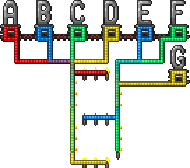

Algebra on $\mathbb{Z}_2$
Algebra on $\mathbb{Z}_2$ is a useful tool for modelling and solving problems in Terraria logical wiring. Z2Algebra.jl provides the functionality we need.
julia> using Pkg; Pkg.add(url="https://github.com/putianyi889/Z2Algebra.jl")Updating git-repo `https://github.com/putianyi889/Z2Algebra.jl` Updating registry at `~/.julia/registries/General.toml` Resolving package versions... Updating `~/work/TerrariaWiringHelper.jl/TerrariaWiringHelper.jl/docs/Project.toml` [fff55359] + Z2Algebra v0.0.3 `https://github.com/putianyi889/Z2Algebra.jl#master` Manifest No packages added to or removed from `~/work/TerrariaWiringHelper.jl/TerrariaWiringHelper.jl/Manifest.toml`julia> using Z2Algebra
Introduction to $\mathbb{Z}_2$
Basically, $\mathbb{Z}_2$ is a set with two elements: 0 and 1, which can be viewed as even and odd numbers. The addition and multiplication operations on $\mathbb{Z}_2$ follow those of the even and the odd numbers, that is,
julia> Z2Number(0)+Z2Number(0), Z2Number(1)+Z2Number(1)(ℤ₂(0), ℤ₂(0))julia> Z2Number(0)+Z2Number(1), Z2Number(1)+Z2Number(0)(ℤ₂(1), ℤ₂(1))julia> Z2Number(0)*Z2Number(0), Z2Number(0)*Z2Number(1), Z2Number(1)*Z2Number(0)(ℤ₂(0), ℤ₂(0), ℤ₂(0))julia> Z2Number(1)*Z2Number(1)ℤ₂(1)
$\mathbb{Z}_2$ is related to Terraria logical wiring. Let $0$-$1$ represent the false-true states of a wire/lamp.
- Suppose that multiple wires connect to the same lamp/torch, then the state of the lamp is the sum of the wire states in the $\mathbb{Z}_2$ sense.
- Suppose that an AND gate has multiple lamps, then the state of the AND gate is the product of the lamp states in the $\mathbb{Z}_2$ sense.
Vectors and Matrices
A $\mathbb{Z}_2$ vector is a sequence of $\mathbb{Z}_2$ numbers. It can represent
- The lamp states on a gate,
- The states of a series of wires,
- The segment states of a segment display.
A $\mathbb{Z}_2$ matrix is a 2-dimensional array of $\mathbb{Z}_2$ numbers. It can represent the connection between $\mathbb{Z}_2$ vectors.
Guide: a segment display
Consider the 7-segment display

Denote the 7 wires by $A,B,C,D,E,F,G$ as shown in the image. Let the two vertical segments on the left be $a,b$, three in the middle be $c,d,e$, and the two on the right be $f,g$, all from top to bottom. The 7-segment display can then be represented by the following matrix
\[\mathbf{M} = \left( \begin{array}{c|ccccccc} & A & B & C & D & E & F & G \\\hline a & 0 & 1 & 1 & 1 & 0 & 0 & 0 \\ b & 0 & 0 & 1 & 1 & 0 & 0 & 0 \\ c & 1 & 0 & 0 & 0 & 0 & 0 & 0 \\ d & 0 & 0 & 0 & 0 & 1 & 0 & 0 \\ e & 0 & 0 & 0 & 1 & 0 & 0 & 0 \\ f & 0 & 0 & 0 & 0 & 1 & 1 & 1 \\ g & 0 & 0 & 0 & 0 & 0 & 1 & 0 \\ \end{array} \right)\]
With Z2Algebra.jl, this matrix can be created via
julia> M = Z2Matrix([ 0 1 1 1 0 0 0; 0 0 1 1 0 0 0; 1 0 0 0 0 0 0; 0 0 0 0 1 0 0; 0 0 0 1 0 0 0; 0 0 0 0 1 1 1; 0 0 0 0 0 1 0; ])7×7 Z2Algebra.Z2Matrix{Matrix{Z2Algebra.Z2Block}}: ℤ₂(0) ℤ₂(1) ℤ₂(1) ℤ₂(1) ℤ₂(0) ℤ₂(0) ℤ₂(0) ℤ₂(0) ℤ₂(0) ℤ₂(1) ℤ₂(1) ℤ₂(0) ℤ₂(0) ℤ₂(0) ℤ₂(1) ℤ₂(0) ℤ₂(0) ℤ₂(0) ℤ₂(0) ℤ₂(0) ℤ₂(0) ℤ₂(0) ℤ₂(0) ℤ₂(0) ℤ₂(0) ℤ₂(1) ℤ₂(0) ℤ₂(0) ℤ₂(0) ℤ₂(0) ℤ₂(0) ℤ₂(1) ℤ₂(0) ℤ₂(0) ℤ₂(0) ℤ₂(0) ℤ₂(0) ℤ₂(0) ℤ₂(0) ℤ₂(1) ℤ₂(1) ℤ₂(1) ℤ₂(0) ℤ₂(0) ℤ₂(0) ℤ₂(0) ℤ₂(0) ℤ₂(1) ℤ₂(0)
The wire states can be represented by a $\mathbb{Z}_2$ vector of length 7, for example,
\[\mathbf{x} = \left( \begin{array}{c|c} A&1\\ B&0\\ C&1\\ D&1\\ E&1\\ F&1\\ G&0 \end{array} \right)\]
julia> x = Z2ColVector([1, 0, 1, 1, 1, 1, 0])7-element Z2Algebra.Z2ColVector{Vector{Z2Algebra.Z2Block}}: ℤ₂(1) ℤ₂(0) ℤ₂(1) ℤ₂(1) ℤ₂(1) ℤ₂(1) ℤ₂(0)
Then, the segment states denoted by vector $\mathbf{y}$ can be calculated by
julia> y = M * x7-element Z2Algebra.Z2ColVector{Vector{Z2Algebra.Z2Block}}: ℤ₂(0) ℤ₂(0) ℤ₂(1) ℤ₂(1) ℤ₂(1) ℤ₂(0) ℤ₂(1)
\[\mathbf{y} = \mathbf{M}\mathbf{x} = \left( \begin{array}{c|c} a&1\\ b&0\\ c&1\\ d&1\\ e&1\\ f&0\\ g&0 \end{array} \right)\]
If the initial segment states are $\mathbf{y}_0\ne \mathbf{0}$, then $\mathbf{y}=\mathbf{M}\mathbf{x}+\mathbf{y}_0$.
Conversely, providing the segment states $\mathbf{y}$, we can obtain the wire states $\mathbf{x}$ through
julia> x = M \ y7-element Z2Algebra.Z2RowVector{Vector{Z2Algebra.Z2Block}}: ℤ₂(1) ℤ₂(0) ℤ₂(1) ℤ₂(1) ℤ₂(1) ℤ₂(1) ℤ₂(0)